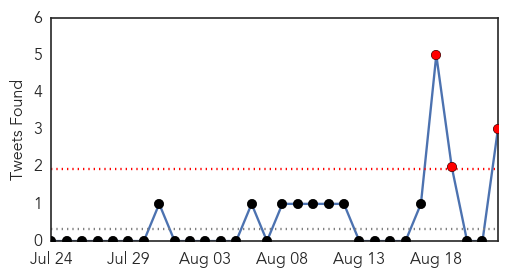

Unknown
30-Day Web Trend
30-Day Twitter Trend
3 alerts, 0 warnings

Article Locations


Article Confidences

Top Articles:
- 0.993
- South Korea reports three more deaths in MERS outbreak, three new cases
- 0.984
- Lyme Disease in U.S. Is Under-Reported, CDC Says
- 0.980
- Suspected MERS case reported in S. Korea
- 0.941
- Testing shows patient in Georgia has the plague
- 0.917
- Chicago Tribune
- 0.917
- Chicago Tribune
- 0.917
- Chicago Tribune
- 0.917
- Chicago Tribune
- 0.917
- Chicago Tribune
- 0.863
- Breaking News for Calaveras County & Beyond!- The Pine Tree .net
- 0.788
- Haj health warning goes out to pilgrims
- 0.772
- CDC: Multistate Outbreak of Salmonella Paratyphi B variant L(+) tartrate(+) and Salmonella Weltevreden Infections Linked to Frozen Raw Tuna
- 0.747
- Your cell phone could soon predict whether you’ll get flu
- 0.723
- Kan. officials investigate a swimming pool parasite
- 0.699
- How DNA detectives are helping solve the rise of superbug
- 0.690
- The Caledonian-Record
- 0.686
- Italian navy rescues thousands of migrants off Libya
- 0.686
- South, North Korea officials meet in bid to ease tension
- 0.686
- US soldiers find themselves at centre of French train drama
- 0.686
- Suspected train gunman ‘known to French intelligence’
- 0.686
- Briton who helped stop French train attack says, ‘I'm no hero’
- 0.686
- Chaos at Macedonia border as refugees storm police
- 0.673
- Report: Four more counties are declared endemic for Lyme disease - WeirtonDailyTimes.com
- 0.672
- Brain-eating amoeba found in another Louisiana water system
- 0.585
- STI decline ‘a surprise’
- 0.554
- Meningococcal disease outbreak in Scotland and Sweden linked to Japan World Scout Jamboree
- 0.553
- The scrub should not be worn out and about
- 0.544
- Levels of dementia may be stabilizing, says report
- 0.515
- Over-burdened: Holy Family Hospital short on crucial staff, equipment
Top Tweets:
- 0.934
- Riyadh MERS hospital outbreak: Today's cases bring the total reported so far to ~90 cases. Big outbreak no sign it's under control. 2/2
- 0.900
- RT: Riyadh MERS hospital outbreak: Today's cases bring the total reported so far to ~90 cases. Big outbreak no sign it's …
- 0.507
- Riyadh MERS hospital outbreak: +7 cases & 1 death today. KSA says 1 case has no links to known cases. 1/2 http://t.co/3P7hi3tGN9